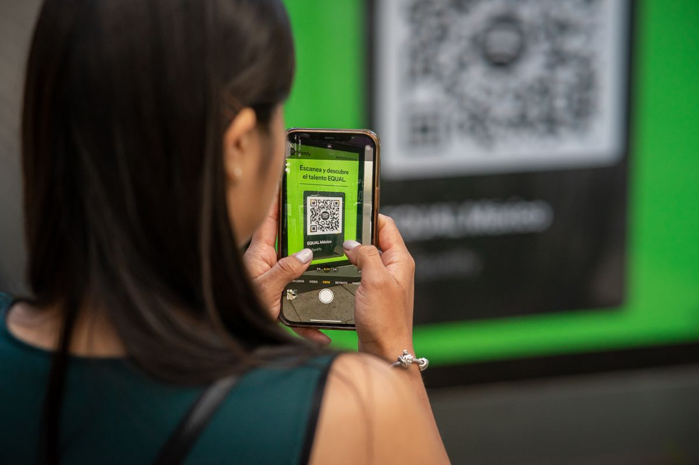

Pernah nggak kamu lagi buka sebuah website di laptop, terus pengin cepat-cepat buka halaman yang sama di HP tanpa repot mengetik alamatnya? Atau kamu jualan dan butuh kode QR buat nomor WhatsApp supaya pembeli tinggal pindai? Ternyata kamu bisa bikin kode QR sendiri, gratis, tanpa daftar akun, dan tanpa pasang aplikasi tambahan.
Fiturnya sudah ada di browser yang mungkin kamu pakai tiap hari: Google Chrome. Di laptop dan di HP, Chrome punya pembuat kode QR bawaan yang bisa bikin kode dari halaman web mana pun dalam dua klik, lalu hasilnya bisa kamu unduh sebagai gambar. Cara di artikel ini mengikuti tampilan Chrome yang berlaku per Oktober 2026.
Buat apa kode QR bikinan sendiri ini berguna?
Kode QR yang kamu buat sendiri bukan sekadar hiasan. Ini beberapa kegunaan nyatanya:
- Memindahkan tautan dari laptop ke HP. Bikin kode QR dari halaman yang sedang kamu buka, pindai dengan kamera HP, dan halaman itu langsung terbuka. Tidak perlu mengetik alamat panjang.
- Nomor WhatsApp buat usaha. Ubah nomor jadi tautan, bikin jadi kode QR, lalu cetak dan tempel di etalase atau kemasan. Pembeli tinggal pindai dan langsung masuk ke chat (cara mengubah nomornya ada di bagian bonus di bawah).
- Tautan media sosial atau formulir. Tempel kodenya di poster, brosur, atau bio usaha supaya orang tidak perlu mengetik alamat yang panjang dan gampang salah.
- Undangan atau info acara. Kode QR menuju Google Maps lokasi atau formulir pendaftaran bisa ditempel di undangan cetak.
Cara bikin kode QR di laptop pakai Chrome
Langkahnya cuma dua klik, tanpa aplikasi tambahan:
- Buka halaman web yang mau kamu bagikan di Google Chrome.
- Klik kanan di area kosong halaman, lalu pilih "Buat kode QR untuk halaman ini". Cara lainnya: klik ikon Bagikan di kanan address bar, lalu pilih Kode QR.
- Sebuah jendela kecil muncul menampilkan kode QR halaman tersebut, lengkap dengan gambar dinosaurus di tengahnya. Klik Unduh, dan file gambar PNG-nya tersimpan di laptop kamu.
Cara bikin kode QR di HP pakai Chrome
Di HP juga tidak perlu aplikasi tambahan. Fitur yang sama tersedia di Chrome untuk Android dan iPhone.
- Buka Google Chrome di HP, lalu buka halaman web yang mau kamu bagikan.
- Di Android: ketuk ikon titik tiga di kanan atas, pilih Bagikan, lalu cari ikon Kode QR (geser sedikit kalau belum kelihatan). Di iPhone: ketuk ikon Bagikan di address bar, lalu pilih Kode QR.
- Kode QR langsung terbentuk di layar. Ketuk Unduh untuk menyimpannya ke galeri HP. Dari galeri, gambarnya bisa kamu kirim lewat chat, cetak, atau tempel di mana saja.
Bonus: cara mengubah nomor WhatsApp jadi kode QR
Ini trik yang paling berguna buat kamu yang jualan. WhatsApp punya format tautan resmi bernama wa.me. Aturannya: nomor Indonesia diawali kode negara 62, angka nol di depan dibuang, tanpa spasi, tanpa tanda plus, dan tanpa tanda hubung. Contohnya, nomor 0812-3456-7890 menjadi https://wa.me/6281234567890.
- Susun tautan wa.me nomor kamu mengikuti format di atas.
- Buka tautan itu di Chrome, lalu ikuti langkah bikin kode QR seperti di atas.
- Unduh gambarnya, cetak atau simpan, dan tempel di tempat yang gampang dilihat pembeli.
Cara mengecek hasilnya
Sebelum disebar atau dicetak, pastikan kode QR-nya benar-benar bisa dipindai:
- Buka aplikasi kamera bawaan di HP kamu.
- Arahkan kamera ke gambar kode QR sampai muncul notifikasi tautan di layar.
- Ketuk tautannya dan pastikan halaman yang terbuka sesuai dengan yang kamu maksud.
Kamera HP modern, baik Android maupun iPhone, sudah bisa membaca kode QR tanpa aplikasi pemindai khusus. Kalau mau dicetak, pakai ukuran yang cukup besar dan jaga kontrasnya (hitam di atas putih polos) supaya gampang dipindai dari jarak normal.

Batasan yang perlu kamu tahu
Ada tiga hal yang perlu kamu pahami supaya tidak kecewa:
- Kode QR buatan Chrome itu statis. Tautan yang tertanam tidak bisa diganti setelah gambarnya dibuat. Kalau alamat halamannya berubah, kamu harus bikin kode yang baru.
- Tampilannya tidak bisa dikustomisasi. Selalu hitam putih dengan logo dinosaurus Chrome di tengah. Tidak bisa ganti warna atau tambah logo usaha.
- Tidak ada statistik pindaian. Kamu tidak bisa tahu berapa orang yang memindai kode itu. Kalau kebutuhanmu lebih serius, misalnya tautan yang bisa diedit belakangan atau data jumlah pemindai untuk usaha, baru kamu butuh layanan generator kode QR khusus.
Intinya
Bikin kode QR itu gratis dan tidak serumit yang dikira. Selama kamu pakai Chrome, pembuat kode QR sudah siap dipakai di laptop maupun HP, tanpa daftar dan tanpa biaya. Buka halaman, klik kanan, unduh, selesai. Gambarnya bisa dipakai ulang kapan pun: dicetak untuk etalase, dikirim lewat chat, atau ditempel di poster. Semua langkah di artikel ini mengikuti tampilan Chrome per Oktober 2026; susunan menunya bisa sedikit berubah kalau Chrome memperbarui tampilannya.
← Kembali ke Other